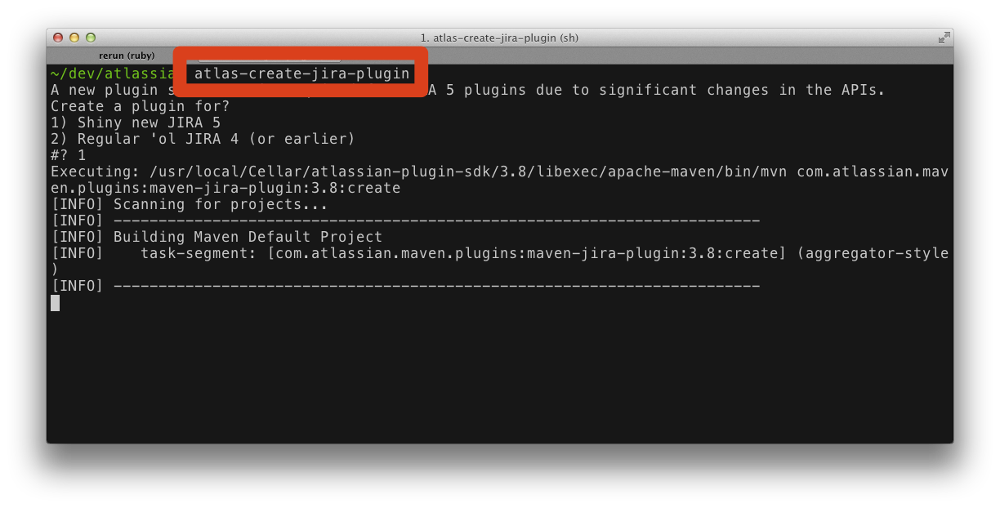
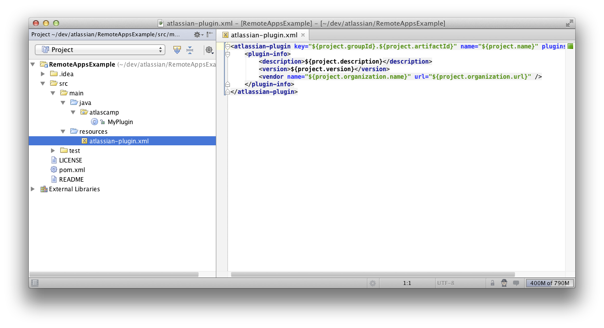
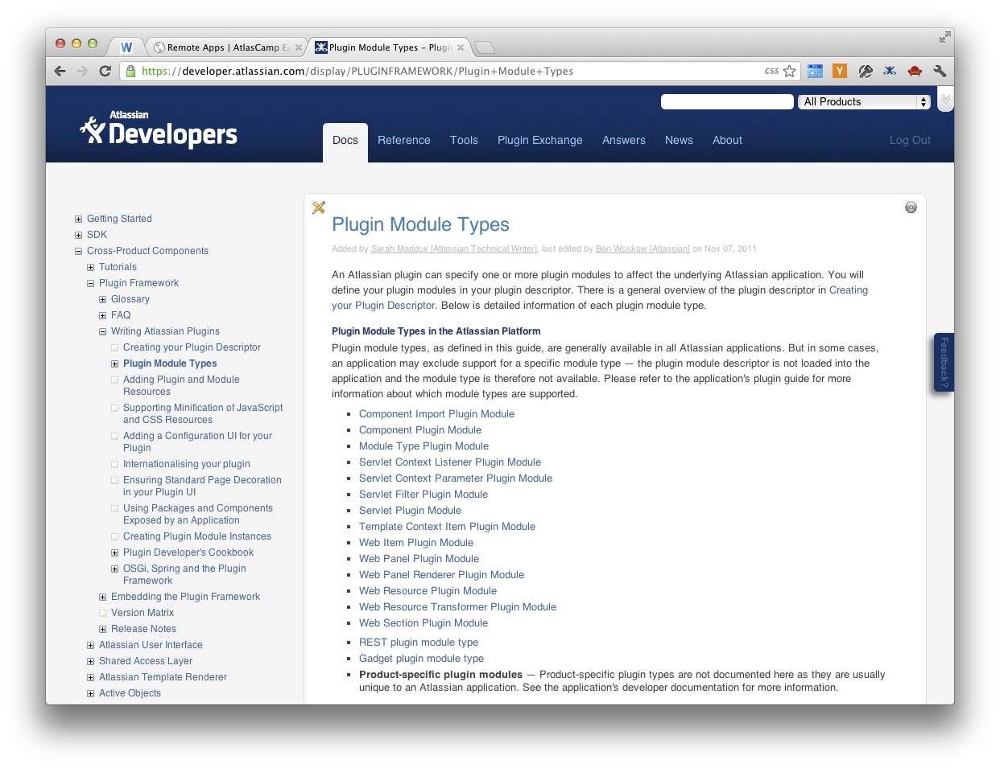
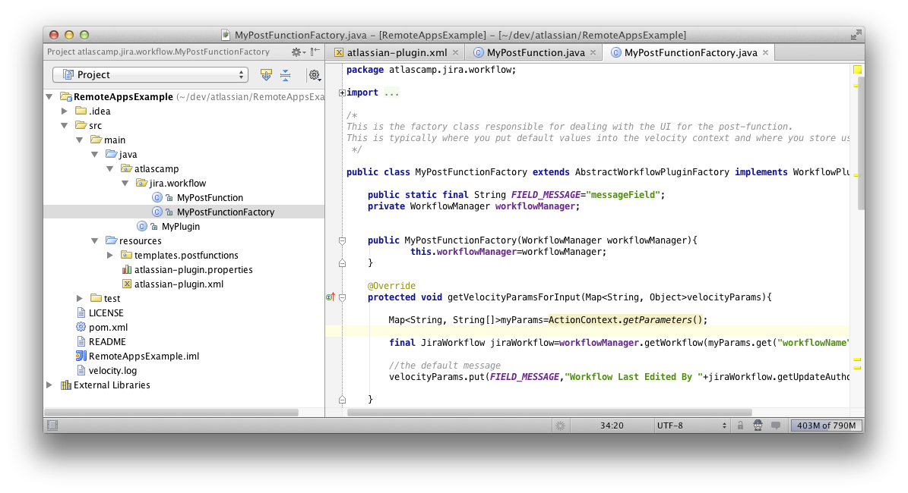
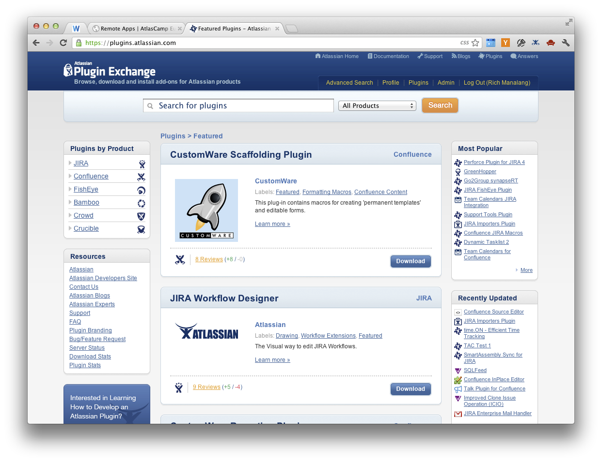

Atlassian Remote Apps
a preview
Rich Manalang → @rmanalan
Developer Advocate, Atlassian
got plugins?
How many of you have written plugins for Atlassian?
Good... lots of you. So, let's take a brief look at
the existing plugin framework and process for building
and deploying plugins.

Most of us start by firing up the Atlassian SDK and using
the useful atlas-* command line commands. Here I'm creating a
JIRA plugin. The SDK will create a bootstrapped version of a
plugin for me.

Next, you crack open your IDE and start coding.

Atlassian supports a varying number of plugin points (or modules)
and you'll likely be referring to the documentation on
developer.atlassian.com a lot.

You can use the
SDK again to quickly generate bootstrap code for the modules
you plan to use. Code and repeat again until your plugin
is done.

Once you're ready to ship, you'll likely want to register your
plugin on plugins.atlassian.com. This brings you a few benefits...
Marketing
and
Selling
When you publish your plugin to the Atlassian Marketplace, you
instantly make your plugin available to all Atlassian customers
through the in-app Marketplace or UPM. You can give your plugin
away for free or sell it.